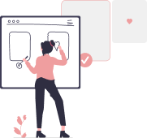
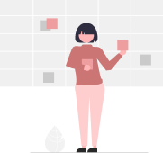

DIFERENCIAIS
Montar telas iguais aos protótipos
Trabalhei durante 1 ano somente montando telas. Recebia layouts e montava as telas exatamente igual ao design criado, sem a utilização de framework.

Criação de protótipos
Comecei a estudar Experiência do Usuário ou UX Design e aprendi técnicas para criação de protótipos tanto web quanto mobile.

Métodologias ágeis
Conhecimento nas metodologias ágeis Scrum e Kanban.